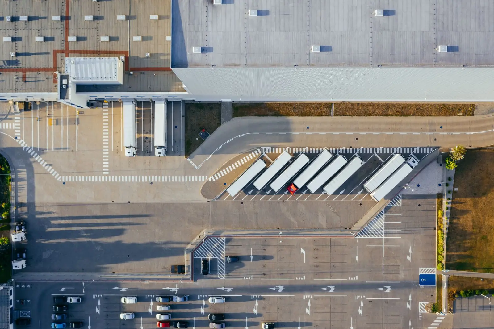

Início / Obras
OB.00 Obras
Obras entregues
Centros logísticos, fábricas, centros comerciais e estruturas metálicas. Cada obra com área, aço, prazo, escopo, desafios, galeria e planta ilustrativa.
Obras ilustrativas · dados fictícios

01 Filtrar por tipo
Quer ver uma obra parecida com a sua?
Conte o tipo de operação e mandamos referências de área, prazo e sistema construtivo.